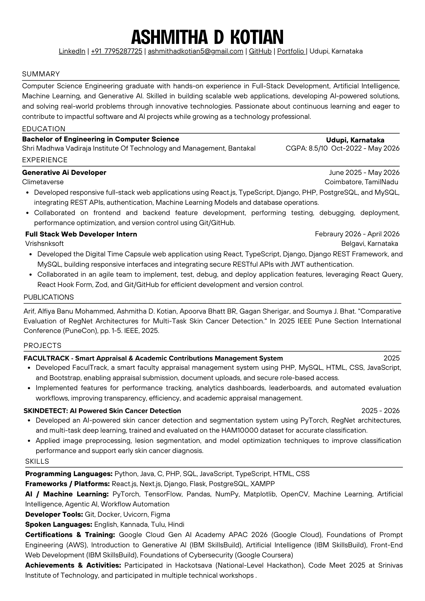

Fresher · Open to entry-level roles 2026
✦ AI Enthusiast
Ashmitha
D Kotian.
Computer Science engineer crafting elegant full-stack web apps and AI-powered products — from generative AI platforms to medical imaging research.
- CGPA
- 8.5/10
- Focus
- Full-Stack + AI
Based in
Udupi, Karnataka
About
I build software that's thoughtful, performant, and human — bridging modern web engineering with applied AI.
I'm a Computer Science engineering graduate at Shri Madhwa Vadiraja Institute of Technology and Management, Bantakal (CGPA: 8.5/10). My work spans full-stack development with React, TypeScript, and Django, and applied research in generative AI and computer vision — including a published IEEE paper on skin cancer detection.
Now
Generative AI Developer
Climetaverse · June 2025—May 2026
Recently
Full-Stack Web Developer Intern
Vrishanksoft · Feb—Apr 2026
Selected work
Featured projects.
Toolkit
Skills & stack.
Curriculum Vitae
Resume & Credentials.
Academic profile, industry experience, IEEE publication, and technical certifications. Preview the document below or download the official PDF.
Education
B.E. in Computer Science & Engineering
Oct 2022 – May 2026Shri Madhwa Vadiraja Institute of Technology and Management, Bantakal
CGPA: 8.5 / 10 · Udupi, Karnataka
Experience
Generative AI Developer
Jun 2025 – May 2026Climetaverse · Coimbatore, Tamil Nadu
Developed responsive full-stack applications with React.js, TypeScript, Django, PHP, PostgreSQL & MySQL; integrated REST APIs, authentication, ML models, and automated deployments.
Full Stack Web Developer Intern
Feb 2026 – Apr 2026Vrishanksoft · Belagavi, Karnataka
Engineered Digital Time Capsule platform using React, TypeScript, Django REST Framework, JWT auth, and React Query in an agile development cycle.
IEEE Publication
Comparative Evaluation of RegNet Architectures for Multi-Task Skin Cancer Detection
2025 IEEE Pune Section International Conference (PuneCon) · IEEE, 2025
Certifications
- ✦ Google Cloud Gen AI Academy APAC 2026
- ✦ AWS Prompt Engineering Foundations
- ✦ IBM SkillsBuild Gen AI & Web Dev
- ✦ Google Coursera Cybersecurity

Contact